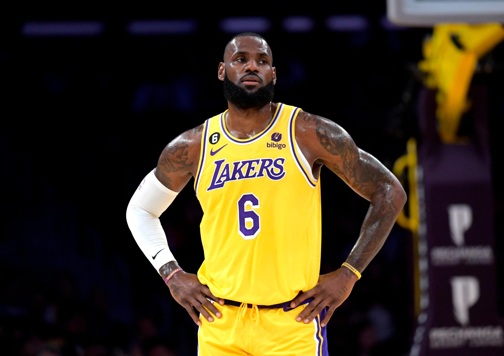

Basketball is a worldwide team sport with five players on each team. The objective of the game is to shoot the basketball, and get it through the opponents net. It was invented in 1891, and is currently one of the most popular sports in the world. The main league for professional basketball is the NBA(National Basketball Association) which is a multi-billion dollar company featuring all of the best talents in the world.
Lebron James is proffesional basketball player in the NBA currently playing as a small forward for the Los Angeles Lakers. He is one of if not the most influencial basketball players widely regarded as the best of all time. He is currently 38 years old and sadly looks to retire in the next few years.

Click this link to learn more about Lebron James.
Stephen Curry is basketball player in the NBA playing as a point guard for the Golden State Warriors. Curry has changed the game with his deadly three point shot normalizing the use of the three pointer. He is 35 years old, and is looking good for atleast several more years.
Click this link to learn more about Stephen Curry.
Luka Doncic is a European basketball player in the NBA, and is arguably the best young star in the league. He currently plays as a point guard for the Dallas Mavericks. Doncic is 24 years old, and looks to surpass some all-time greats throughtout his career.
Click this link to learn more about Luka Doncic.